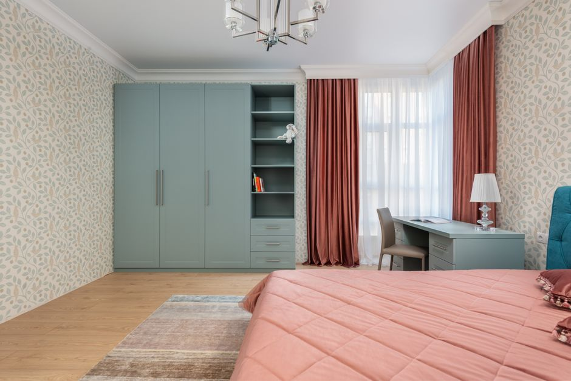

Formas de usar los cortinas para crear zonas de almacenamiento oculto

Photo: Max Vakhtbovych / Pexels
Una cortina puede ocultar estantes, una barra de ropa o una pila de cajas y costar mucho menos que puertas o armarios. Es una solución flexible para un apartamento pequeño, siempre que la instales con seguridad.
1. Elige qué ocultar
Las cortinas sirven para estantes abiertos, un rincón usado como armario, el espacio bajo un escritorio o un fregadero, o una barra de ropa. No las uses para esconder nada que necesite ventilación o acceso, como una caldera, un calentador de agua, un panel eléctrico o una salida de emergencia.
2. Elige la barra adecuada
Escoge una barra preparada para el peso de la cortina. Si la montas en la pared, usa tacos adecuados al tipo de pared y, en paneles de yeso, fíjala a los montantes siempre que sea posible. Una barra de tensión sirve para cortinas ligeras en un hueco estrecho, pero no para las pesadas.
3. Elige la tela adecuada
Una tela de peso medio cae bien y oculta el contenido. Elige una tela lavable y, si va a colgar cerca de una fuente de calor, que esté etiquetada como ignífuga.
4. Mantenla lejos del calor
No cuelgues nunca una cortina cerca de una estufa, un calefactor, un radiador o una vela. Las cortinas arden rápido.
5. Deja espacio para respirar
No guardes objetos húmedos detrás de una cortina y deja un espacio abajo o a los lados para que circule el aire y evitar el moho.
6. Organiza lo de detrás
Usa cajas etiquetadas, coloca lo pesado abajo y lo que usas a menudo al alcance. Guarda los productos de limpieza y los químicos fuera del alcance de niños y mascotas.
7. Instálala con seguridad
Usa un taburete estable, no una silla. Antes de taladrar, comprueba que no haya cables ni tuberías en la pared, y pide permiso a tu casero antes de hacer agujeros.
Una cortina es una forma sencilla y económica de crear almacenamiento oculto, y funciona mejor con un poco de planificación en seguridad y ventilación.